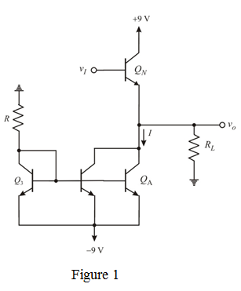

Step 1:
Refer to Figure 11.2 in the textbook.
The positive limit of the linear region is determined by the saturation of  is,
is,
This is greater than the required value of 7 V.
The configuration provides a design capable of output.
The upper limit, 8.7 V is greater than 7 V.
Step 2:
The negative direction depends on the values of I and  . The limit of the linear region is determined by
. The limit of the linear region is determined by  turning off.
turning off.
Using the smallest possible total supply current, provided by the four identical devices the total supply current can be minimized.
Step 3:
The resulting circuit is shown in Figure 1.

Step 4:
From the circuit in Figure 1, the supply current is
Step 5:
Therefore, current passing through each transistor is,
Step 6:
Find the value of R using ohm’s law.
Therefore, the value of resistance is .